Power Analysis
Hardware Hacking con ChipWhisperer
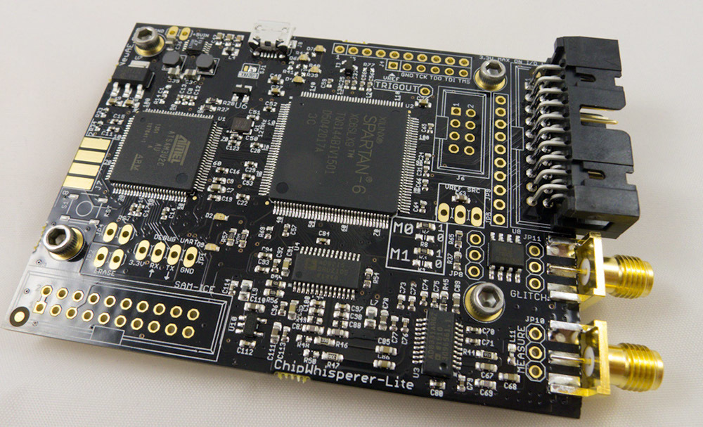Bsides Málaga 2019
Sobre mi
- Responsable de Hardware y firmware en Homyhub
- Mas de 10 años de experiencia en el desarrollo de Hardware y Firmware.
El Problema
El Problema
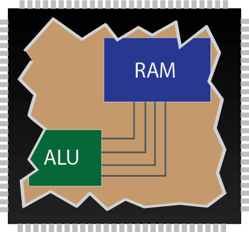El Problema
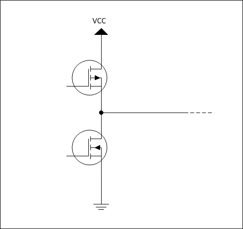El Problema
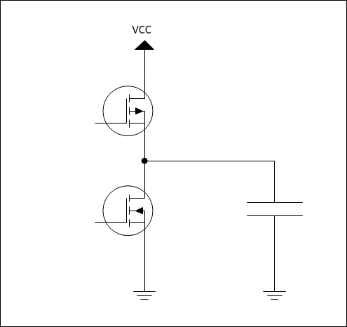Las lineas de bus se comportan como un condensador
El Problema
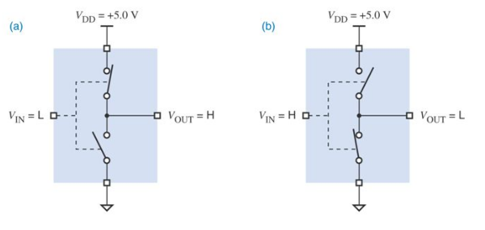El Problema
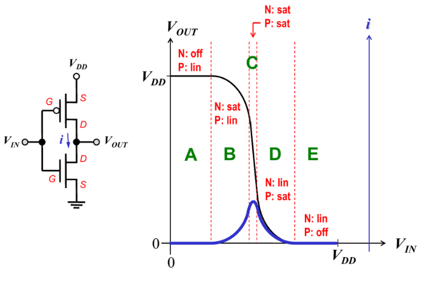Las transiciones tienen que ser muy abruptas!
El Problema
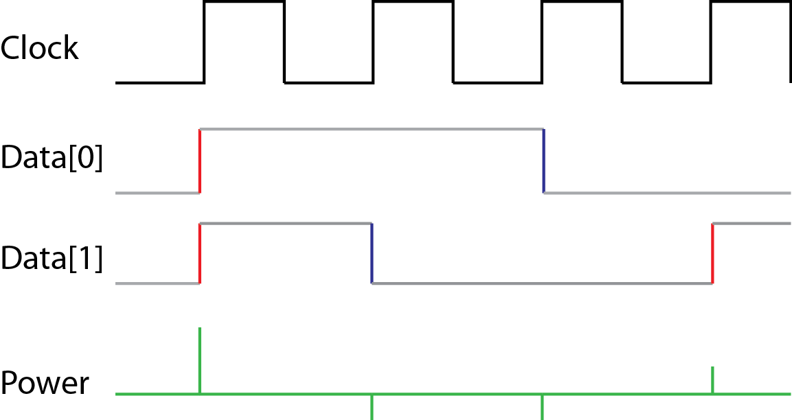El Problema
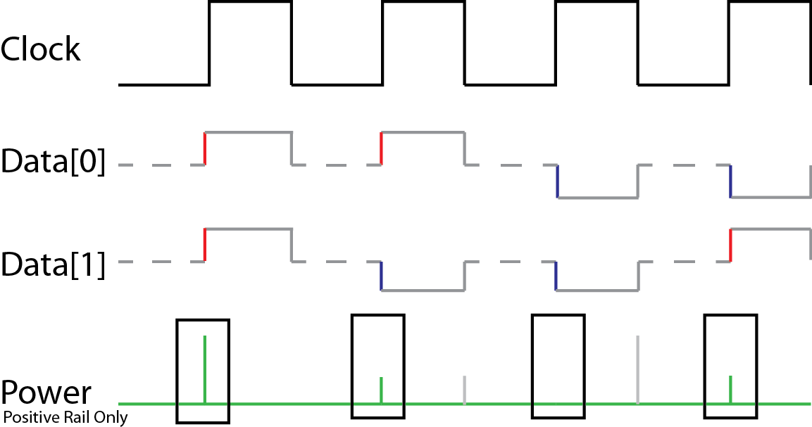El Problema
Mediante el analisis del consumo puedo saber cuantos 1s hay en el bus de datos en un momento dado
Si puedo saber en que momento está la clave privada en el bus....
Cómo?
Cómo?
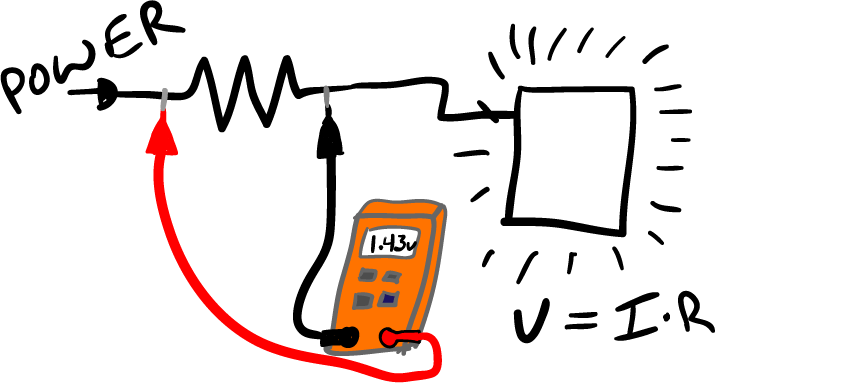Cómo?
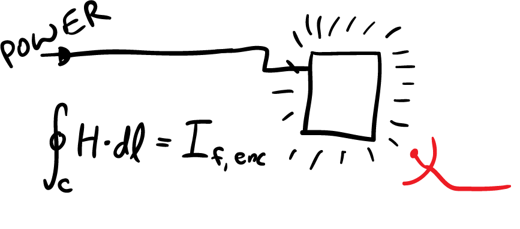Cómo?
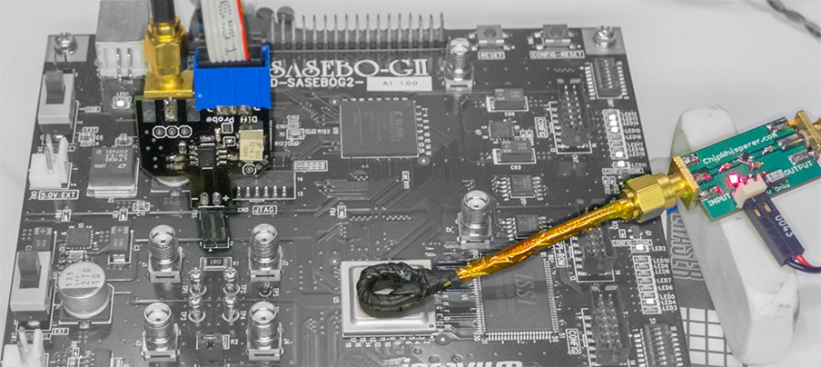Cómo?
Condensadores de desacoplo
Cómo?
Condensadores de desacoplo
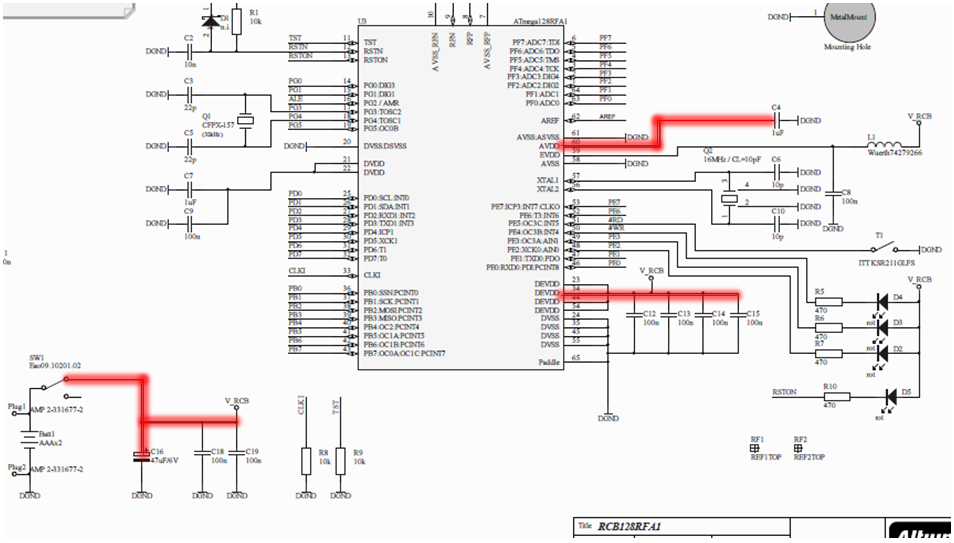Cómo?
Condensadores de desacoplo
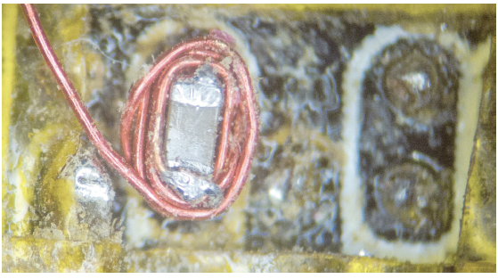Cómo?
Sincronización
- Buffer del Chipwhisperer solo tiene 24k Muestas @ Max freq 192Mhz
- Solo tenemos 125us para muestrear!
- Necesitamos altas frecuencias, por las transiciones Abruptas!
- Tenemos que muestrear de manera MUY Precisa, en el momento exacto
Sincronización
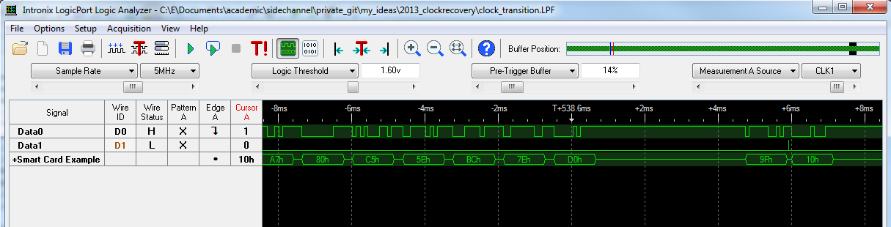La sincronicación es clave del exito del ataque!
Sincronización
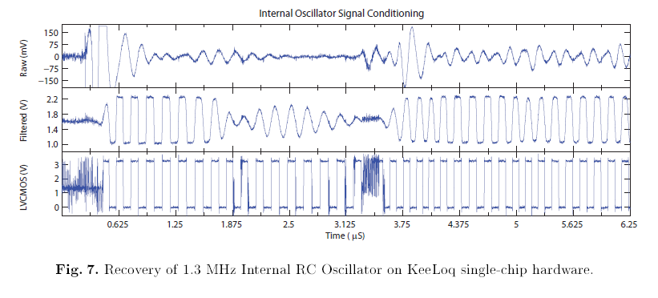Restaurar la señal de reloj desde el consumo electrico
¿Qué hay de nuevo?
¿Qué hay de nuevo?
Power Analysis Tiene mas de 20 Años!
"SPA and DPA were introduced to the open cryptology community in 1998 by Paul Kocher, Joshua Jaffe and Benjamin Jun."Wikipedia
Precio!
Precio!
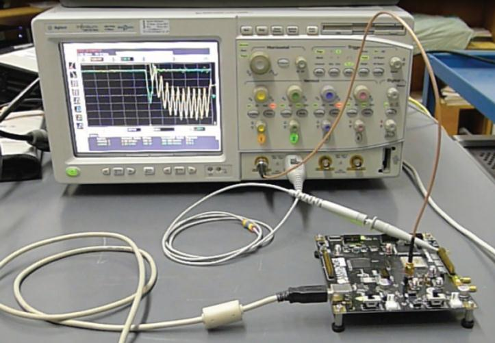Precio!
| Autor | Paper | Año | Osciloscopio | Precio |
|---|---|---|---|---|
| Dario Carluccio | Electromagnetic Side Channel Analysis Embedded Crypto Devices | 2005 | Infiniium 5432D MSO | 8.000 USD |
| Youssef Souissi et al. | Embedded systems security: An evaluation methodology against Side Channel Attacks | 2011 | Infiniium 54855 | 20.000 USD |
Precio!
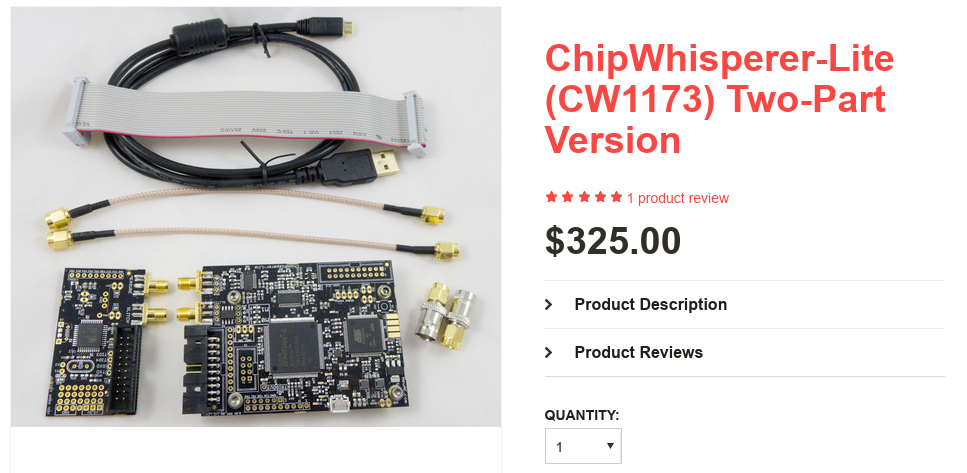Precio!
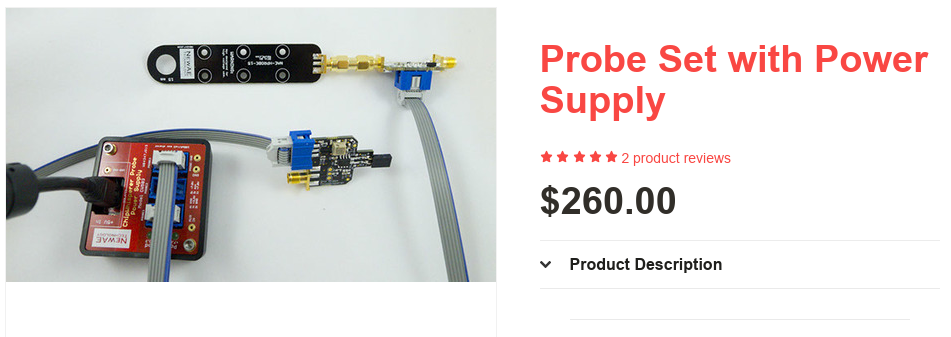Maldades
¿ Que podemos hacer con todo esto ?
Maldades
Clonar Smart Cards
Maldades
Clonar tarjetas de credito
Maldades

Clonar DNI
Conclusiones
- No hemos roto el cifrado en ningún momento
- El problema es como funciona el hardware
- Solo se puede solucionar en hardware
- Todo esto funciona solo si tenemos acceso físico al dispositivo